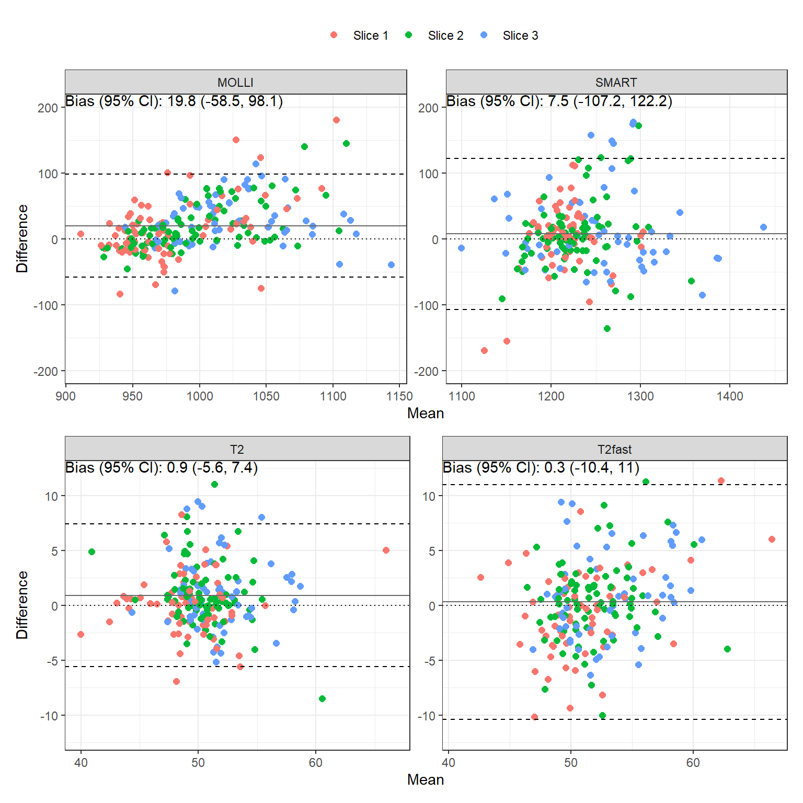
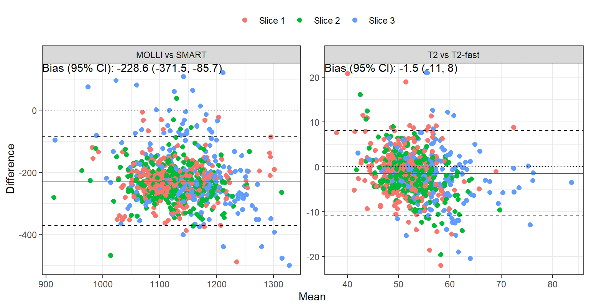
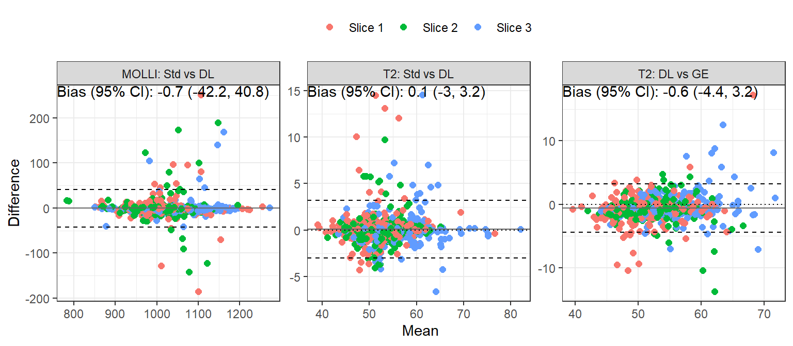

Aim 2 Results
Repeatability for DL reconstructions
The bias, repeatability coefficient (RC), intraclass correlation coefficient (ICC) and 95% confidence interval comparing scan A vs B are tabulated in Table 1. Bland-Altman plots are shown in Figure 1.
Table 1: Repeatability analysis of T1 and T2.
| map | name | Bias | RC | ICC (95% CI) | P-value |
|---|---|---|---|---|---|
| MOLLI | aha1 | 17.5 | 132.7 | 0.507 (-0.071, 0.836) | p=0.04 |
| MOLLI | aha2 | 18.8 | 86.7 | 0.612 (0.083, 0.877) | p=0.014 |
| MOLLI | aha3 | 7.1 | 45.6 | 0.845 (0.517, 0.958) | p<0.001 |
| MOLLI | aha4 | -4.5 | 72.4 | 0.613 (0.05, 0.886) | p=0.018 |
| MOLLI | aha5 | 17.5 | 84.5 | 0.562 (0.006, 0.858) | p=0.024 |
| MOLLI | aha6 | 34.4 | 119.0 | 0.084 (-0.497, 0.625) | p=0.391 |
| MOLLI | aha7 | 7.2 | 71.2 | 0.843 (0.577, 0.949) | p<0.001 |
| MOLLI | aha8 | 21.2 | 67.1 | 0.638 (0.179, 0.872) | p=0.006 |
| MOLLI | aha9 | 16.4 | 42.3 | 0.757 (0.37, 0.922) | p<0.001 |
| MOLLI | aha10 | 15.6 | 48.3 | 0.649 (0.108, 0.898) | p=0.012 |
| MOLLI | aha11 | 25.3 | 91.1 | 0.454 (-0.14, 0.814) | p=0.062 |
| MOLLI | aha12 | 24.9 | 93.3 | 0.501 (-0.024, 0.814) | p=0.03 |
| MOLLI | aha13 | 30.6 | 72.2 | 0.553 (0.023, 0.845) | p=0.021 |
| MOLLI | aha14 | 35.7 | 59.3 | 0.543 (0.034, 0.833) | p=0.019 |
| MOLLI | aha15 | 31.6 | 70.7 | 0.496 (-0.12, 0.844) | p=0.052 |
| MOLLI | aha16 | 14.4 | 88.1 | 0.651 (0.175, 0.884) | p=0.006 |
| MOLLI | sept_1_mean | 13.1 | 58.1 | 0.769 (0.369, 0.931) | p=0.001 |
| MOLLI | sept_2_mean | 16.1 | 71.7 | 0.571 (0.048, 0.852) | p=0.017 |
| MOLLI | sept_3_mean | 28.1 | 72.6 | 0.578 (0.085, 0.848) | p=0.013 |
| SMART | aha1 | -33.2 | 155.8 | -0.15 (-0.695, 0.526) | p=0.66 |
| SMART | aha2 | 4.6 | 81.6 | 0.497 (-0.159, 0.857) | p=0.062 |
| SMART | aha3 | 15.3 | 45.2 | 0.724 (0.159, 0.937) | p=0.01 |
| SMART | aha4 | -17.9 | 68.3 | 0.471 (-0.296, 0.881) | p=0.104 |
| SMART | aha5 | -3.8 | 193.9 | 0.502 (-0.152, 0.859) | p=0.06 |
| SMART | aha6 | 20.4 | 97.5 | -0.299 (-0.768, 0.403) | p=0.801 |
| SMART | aha7 | -4.0 | 49.4 | 0.594 (0.109, 0.854) | p=0.01 |
| SMART | aha8 | 5.6 | 110.0 | 0.073 (-0.463, 0.579) | p=0.397 |
| SMART | aha9 | 27.2 | 125.2 | 0.178 (-0.422, 0.68) | p=0.282 |
| SMART | aha10 | -18.9 | 64.5 | 0.528 (-0.117, 0.868) | p=0.05 |
| SMART | aha11 | 1.7 | 126.5 | 0.586 (-0.034, 0.887) | p=0.031 |
| SMART | aha12 | 23.4 | 129.1 | 0.294 (-0.264, 0.712) | p=0.146 |
| SMART | aha13 | 5.5 | 90.7 | 0.709 (0.277, 0.905) | p=0.002 |
| SMART | aha14 | 28.7 | 150.1 | 0.024 (-0.52, 0.565) | p=0.465 |
| SMART | aha15 | -5.1 | 130.7 | 0.734 (0.227, 0.932) | p=0.006 |
| SMART | aha16 | 15.3 | 88.6 | 0.884 (0.642, 0.967) | p<0.001 |
| SMART | sept_1_mean | 7.6 | 74.5 | 0.475 (-0.147, 0.835) | p=0.062 |
| SMART | sept_2_mean | 20.2 | 129.2 | -0.089 (-0.637, 0.537) | p=0.6 |
| SMART | sept_3_mean | 24.1 | 149.0 | 0.076 (-0.481, 0.599) | p=0.397 |
| map | name | Bias | RC | ICC (95% CI) | P-value |
|---|---|---|---|---|---|
| T2 | aha1 | 0.1 | 5.7 | 0.608 (0.001, 0.894) | p=0.025 |
| T2 | aha2 | 0.3 | 9.3 | 0.256 (-0.417, 0.761) | p=0.226 |
| T2 | aha3 | 1.5 | 6.9 | 0.822 (0.46, 0.952) | p<0.001 |
| T2 | aha4 | -0.1 | 8.1 | 0.421 (-0.251, 0.829) | p=0.101 |
| T2 | aha5 | -0.3 | 3.9 | 0.885 (0.599, 0.972) | p<0.001 |
| T2 | aha6 | 0.6 | 5.5 | 0.707 (0.213, 0.917) | p=0.005 |
| T2 | aha7 | 1.2 | 4.6 | 0.584 (0.069, 0.858) | p=0.015 |
| T2 | aha8 | 1.4 | 8.1 | -0.377 (-0.76, 0.216) | p=0.9 |
| T2 | aha9 | 1.4 | 4.5 | 0.404 (-0.17, 0.78) | p=0.078 |
| T2 | aha10 | 0.4 | 6.7 | 0.696 (0.254, 0.901) | p=0.003 |
| T2 | aha11 | 0.9 | 3.3 | 0.849 (0.573, 0.953) | p<0.001 |
| T2 | aha12 | 0.8 | 3.7 | 0.411 (-0.162, 0.783) | p=0.074 |
| T2 | aha13 | 1.1 | 8.6 | 0.328 (-0.281, 0.757) | p=0.139 |
| T2 | aha14 | 1.6 | 7.4 | 0.372 (-0.206, 0.765) | p=0.097 |
| T2 | aha15 | 1.0 | 4.6 | 0.726 (0.309, 0.911) | p=0.002 |
| T2 | aha16 | 0.4 | 3.9 | 0.796 (0.429, 0.94) | p<0.001 |
| T2 | sept_1_mean | 1.9 | 12.8 | 0.573 (-0.013, 0.872) | p=0.027 |
| T2 | sept_2_mean | 0.7 | 6.6 | 0.192 (-0.385, 0.67) | p=0.257 |
| T2 | sept_3_mean | 1.4 | 7.6 | 0.39 (-0.186, 0.773) | p=0.086 |
| T2fast | aha1 | -2.1 | 8.0 | 0.032 (-0.56, 0.617) | p=0.457 |
| T2fast | aha2 | 0.9 | 11.6 | 0.238 (-0.433, 0.752) | p=0.242 |
| T2fast | aha3 | 0.4 | 9.3 | 0.754 (0.269, 0.938) | p=0.004 |
| T2fast | aha4 | -0.4 | 18.1 | -0.002 (-0.609, 0.626) | p=0.497 |
| T2fast | aha5 | -4.7 | 19.4 | -0.371 (-0.799, 0.333) | p=0.857 |
| T2fast | aha6 | -2.2 | 10.4 | 0.252 (-0.386, 0.738) | p=0.217 |
| T2fast | aha7 | 2.0 | 6.3 | 0.319 (-0.263, 0.738) | p=0.136 |
| T2fast | aha8 | 2.0 | 11.3 | -0.062 (-0.58, 0.503) | p=0.578 |
| T2fast | aha9 | 0.6 | 6.8 | 0.602 (0.096, 0.865) | p=0.012 |
| T2fast | aha10 | -1.9 | 9.1 | 0.565 (0.04, 0.85) | p=0.019 |
| T2fast | aha11 | -1.3 | 10.6 | 0.351 (-0.229, 0.754) | p=0.111 |
| T2fast | aha12 | 0.0 | 3.5 | 0.828 (0.523, 0.946) | p<0.001 |
| T2fast | aha13 | 3.1 | 10.6 | 0.242 (-0.366, 0.714) | p=0.215 |
| T2fast | aha14 | 2.1 | 13.4 | 0.11 (-0.454, 0.621) | p=0.354 |
| T2fast | aha15 | -0.2 | 6.8 | 0.527 (-0.043, 0.844) | p=0.034 |
| T2fast | aha16 | 1.2 | 7.5 | 0.606 (0.072, 0.875) | p=0.015 |
| T2fast | sept_1_mean | 0.9 | 8.4 | 0.695 (0.15, 0.921) | p=0.01 |
| T2fast | sept_2_mean | 0.7 | 7.5 | 0.426 (-0.144, 0.79) | p=0.066 |
| T2fast | sept_3_mean | 2.2 | 12.9 | 0.14 (-0.43, 0.639) | p=0.317 |
Between-system reproducibility
The bias, reproducibility coefficient (RC), intraclass correlation coefficient (ICC) and 95% confidence interval comparing scan A vs B are tabulated in ?@tbl-icc-rep-inter-sys. Bland-Altman plots are shown in Figure 2.

Between-system reproducibility analysis of T1 and T2.
| map | name | Bias | RC | ICC (95% CI) | P-value |
|---|---|---|---|---|---|
| MOLLI | aha1 | -20.2 | 123.0 | 0.46 (-0.103, 0.805) | p=0.051 |
| MOLLI | aha2 | -4.4 | 97.9 | 0.436 (-0.133, 0.794) | p=0.062 |
| MOLLI | aha3 | 3.1 | 74.8 | 0.485 (-0.071, 0.816) | p=0.041 |
| MOLLI | aha4 | -40.7 | 100.5 | 0.427 (-0.172, 0.803) | p=0.075 |
| MOLLI | aha5 | -23.9 | 79.4 | 0.563 (0.007, 0.858) | p=0.024 |
| MOLLI | aha6 | -6.2 | 100.4 | 0.615 (0.116, 0.87) | p=0.01 |
| MOLLI | aha7 | 12.4 | 132.5 | 0.56 (0.101, 0.825) | p=0.01 |
| MOLLI | aha8 | 19.7 | 82.2 | 0.627 (0.202, 0.856) | p=0.004 |
| MOLLI | aha9 | 4.0 | 64.6 | 0.732 (0.381, 0.9) | p<0.001 |
| MOLLI | aha10 | 1.0 | 61.4 | 0.776 (0.449, 0.921) | p<0.001 |
| MOLLI | aha11 | 2.2 | 81.3 | 0.586 (0.097, 0.851) | p=0.012 |
| MOLLI | aha12 | 17.9 | 100.3 | 0.716 (0.334, 0.898) | p<0.001 |
| MOLLI | aha13 | 44.0 | 238.4 | 0.049 (-0.501, 0.582) | p=0.432 |
| MOLLI | aha14 | -9.1 | 105.3 | 0.655 (0.229, 0.873) | p=0.003 |
| MOLLI | aha15 | 15.0 | 96.6 | 0.746 (0.371, 0.914) | p<0.001 |
| MOLLI | aha16 | 41.0 | 178.2 | 0.553 (0.023, 0.845) | p=0.021 |
| MOLLI | sept_1_mean | 0.5 | 81.2 | 0.483 (-0.073, 0.815) | p=0.042 |
| MOLLI | sept_2_mean | 18.2 | 91.9 | 0.545 (0.079, 0.818) | p=0.013 |
| MOLLI | sept_3_mean | -5.1 | 100.6 | 0.737 (0.373, 0.906) | p<0.001 |
| SMART | aha1 | 8.7 | 69.4 | 0.698 (0.196, 0.914) | p=0.006 |
| SMART | aha2 | -25.3 | 54.7 | 0.664 (0.134, 0.903) | p=0.01 |
| SMART | aha3 | 18.1 | 134.3 | 0.038 (-0.532, 0.596) | p=0.449 |
| SMART | aha4 | 26.6 | 144.8 | 0.395 (-0.18, 0.776) | p=0.083 |
| SMART | aha5 | -14.9 | 137.2 | 0.321 (-0.237, 0.726) | p=0.124 |
| SMART | aha6 | 29.4 | 192.2 | -0.016 (-0.53, 0.517) | p=0.519 |
| SMART | aha7 | 7.6 | 58.0 | 0.755 (0.407, 0.913) | p<0.001 |
| SMART | aha8 | -18.7 | 56.7 | 0.746 (0.391, 0.91) | p<0.001 |
| SMART | aha9 | 10.0 | 81.5 | 0.503 (0.023, 0.798) | p=0.021 |
| SMART | aha10 | 9.0 | 106.0 | 0.527 (0.034, 0.817) | p=0.019 |
| SMART | aha11 | -31.7 | 108.7 | 0.436 (-0.083, 0.774) | p=0.047 |
| SMART | aha12 | 8.7 | 109.3 | 0.598 (0.158, 0.843) | p=0.006 |
| SMART | aha13 | 22.3 | 192.4 | 0.406 (-0.168, 0.781) | p=0.077 |
| SMART | aha14 | -70.0 | 109.3 | 0.419 (-0.127, 0.776) | p=0.062 |
| SMART | aha15 | 6.0 | 232.8 | 0.347 (-0.209, 0.74) | p=0.105 |
| SMART | aha16 | 27.1 | 325.0 | 0.176 (-0.399, 0.661) | p=0.275 |
| SMART | sept_1_mean | -5.4 | 67.9 | 0.667 (0.14, 0.904) | p=0.01 |
| SMART | sept_2_mean | 1.9 | 65.9 | 0.773 (0.443, 0.92) | p<0.001 |
| SMART | sept_3_mean | -93.7 | 111.6 | 0.276 (-0.307, 0.716) | p=0.173 |
| map | name | Bias | RC | ICC (95% CI) | P-value |
|---|---|---|---|---|---|
| T2 | aha1 | 1.7 | 10.1 | 0.348 (-0.166, 0.718) | p=0.088 |
| T2 | aha2 | -2.3 | 7.9 | 0.306 (-0.211, 0.695) | p=0.118 |
| T2 | aha3 | -1.0 | 11.9 | 0.205 (-0.312, 0.634) | p=0.217 |
| T2 | aha4 | -1.9 | 9.0 | 0.287 (-0.231, 0.684) | p=0.134 |
| T2 | aha5 | 0.9 | 10.0 | 0.192 (-0.325, 0.626) | p=0.232 |
| T2 | aha6 | 0.8 | 11.8 | -0.09 (-0.552, 0.422) | p=0.63 |
| T2 | aha7 | 1.9 | 8.6 | 0.572 (0.119, 0.831) | p=0.009 |
| T2 | aha8 | -0.2 | 11.8 | -0.059 (-0.53, 0.448) | p=0.584 |
| T2 | aha9 | 0.9 | 8.5 | 0.071 (-0.43, 0.545) | p=0.393 |
| T2 | aha10 | 0.1 | 6.3 | -0.084 (-0.548, 0.427) | p=0.621 |
| T2 | aha11 | 0.3 | 8.6 | -0.138 (-0.598, 0.401) | p=0.688 |
| T2 | aha12 | 0.8 | 8.9 | 0.276 (-0.243, 0.677) | p=0.144 |
| T2 | aha13 | -1.2 | 13.8 | 0.507 (0.027, 0.8) | p=0.02 |
| T2 | aha14 | -3.4 | 8.7 | 0.7 (0.306, 0.892) | p=0.001 |
| T2 | aha15 | -3.1 | 14.9 | 0.309 (-0.25, 0.72) | p=0.134 |
| T2 | aha16 | 1.7 | 13.7 | 0.121 (-0.445, 0.628) | p=0.34 |
| T2 | sept_1_mean | -1.3 | 7.2 | 0.329 (-0.186, 0.708) | p=0.1 |
| T2 | sept_2_mean | 0.8 | 9.0 | 0.219 (-0.299, 0.643) | p=0.201 |
| T2 | sept_3_mean | -3.3 | 10.3 | 0.61 (0.157, 0.854) | p=0.006 |
| T2fast | aha1 | -0.4 | 7.7 | 0.165 (-0.387, 0.638) | p=0.28 |
| T2fast | aha2 | 0.0 | 12.4 | -0.435 (-0.778, 0.121) | p=0.942 |
| T2fast | aha3 | 1.4 | 11.0 | -0.007 (-0.524, 0.523) | p=0.507 |
| T2fast | aha4 | 4.5 | 14.4 | -0.419 (-0.77, 0.14) | p=0.934 |
| T2fast | aha5 | 0.8 | 13.9 | -0.637 (-0.875, -0.135) | p=0.991 |
| T2fast | aha6 | -0.5 | 10.7 | 0.333 (-0.248, 0.746) | p=0.125 |
| T2fast | aha7 | -0.5 | 12.2 | 0.448 (-0.069, 0.78) | p=0.042 |
| T2fast | aha8 | -1.4 | 12.5 | 0.227 (-0.31, 0.66) | p=0.201 |
| T2fast | aha9 | -0.9 | 9.5 | 0.403 (-0.123, 0.757) | p=0.063 |
| T2fast | aha10 | -0.1 | 8.9 | 0.245 (-0.292, 0.671) | p=0.182 |
| T2fast | aha11 | 0.9 | 9.3 | 0.301 (-0.236, 0.703) | p=0.131 |
| T2fast | aha12 | 0.8 | 6.7 | 0.685 (0.258, 0.891) | p=0.003 |
| T2fast | aha13 | -3.6 | 19.7 | 0.376 (-0.201, 0.767) | p=0.095 |
| T2fast | aha14 | -2.3 | 15.1 | 0.581 (0.113, 0.842) | p=0.01 |
| T2fast | aha15 | -4.1 | 16.7 | 0.297 (-0.262, 0.713) | p=0.144 |
| T2fast | aha16 | -1.2 | 9.6 | 0.628 (0.073, 0.891) | p=0.015 |
| T2fast | sept_1_mean | 1.1 | 9.9 | -0.141 (-0.614, 0.419) | p=0.685 |
| T2fast | sept_2_mean | -1.0 | 10.4 | 0.366 (-0.166, 0.738) | p=0.084 |
| T2fast | sept_3_mean | -2.6 | 14.8 | 0.653 (0.225, 0.872) | p=0.003 |
Between-sequence reproducibility
The bias, reproducibility coefficient (RC), intraclass correlation coefficient (ICC) and 95% confidence interval comparing MOLLI vs SMART and T2 vs T2fast are tabulated in Table 2. Bland-Altman plots are shown in Figure 3. (Non-inter-system: priority scan A \(\to\) B; inter-system: priority scan B \(\to\) A.) Bias for MOLLI vs SMART is substantial: SMART values are bigger, causing lack of agreement.

| name | Bias | RC | ICC (95% CI) | P-value | |
|---|---|---|---|---|---|
| MOLLI vs SMART | aha1 | -214.0 | 135.5 | -0.693 (-0.818, -0.504) | p=1 |
| MOLLI vs SMART | aha2 | -240.6 | 92.2 | -0.754 (-0.855, -0.598) | p=1 |
| MOLLI vs SMART | aha3 | -257.3 | 101.9 | -0.762 (-0.859, -0.61) | p=1 |
| MOLLI vs SMART | aha4 | -221.6 | 145.3 | -0.617 (-0.768, -0.398) | p=1 |
| MOLLI vs SMART | aha5 | -233.2 | 109.3 | -0.675 (-0.806, -0.478) | p=1 |
| MOLLI vs SMART | aha6 | -219.9 | 111.9 | -0.57 (-0.734, -0.341) | p=1 |
| MOLLI vs SMART | aha7 | -217.7 | 141.9 | -0.666 (-0.797, -0.474) | p=1 |
| MOLLI vs SMART | aha8 | -255.6 | 75.9 | -0.807 (-0.887, -0.68) | p=1 |
| MOLLI vs SMART | aha9 | -249.0 | 96.6 | -0.788 (-0.876, -0.65) | p=1 |
| MOLLI vs SMART | aha10 | -221.4 | 96.2 | -0.725 (-0.839, -0.549) | p=1 |
| MOLLI vs SMART | aha11 | -227.4 | 112.5 | -0.72 (-0.835, -0.543) | p=1 |
| MOLLI vs SMART | aha12 | -213.9 | 107.9 | -0.491 (-0.678, -0.244) | p=1 |
| MOLLI vs SMART | aha13 | -178.6 | 204.2 | -0.504 (-0.687, -0.26) | p=1 |
| MOLLI vs SMART | aha14 | -269.2 | 118.1 | -0.741 (-0.846, -0.581) | p=1 |
| MOLLI vs SMART | aha15 | -206.0 | 188.2 | -0.522 (-0.703, -0.277) | p=1 |
| MOLLI vs SMART | aha16 | -142.9 | 230.6 | -0.245 (-0.496, 0.045) | p=0.952 |
| MOLLI vs SMART | sept_1_mean | -246.6 | 90.6 | -0.771 (-0.865, -0.625) | p=1 |
| MOLLI vs SMART | sept_2_mean | -258.1 | 91.5 | -0.845 (-0.91, -0.739) | p=1 |
| MOLLI vs SMART | sept_3_mean | -266.2 | 123.0 | -0.739 (-0.844, -0.578) | p=1 |
| T2 vs T2-fast | aha1 | -0.1 | 9.0 | 0.276 (-0.014, 0.524) | p=0.031 |
| T2 vs T2-fast | aha2 | -0.2 | 9.4 | 0.446 (0.178, 0.654) | p<0.001 |
| T2 vs T2-fast | aha3 | -3.3 | 10.2 | 0.37 (0.08, 0.602) | p=0.007 |
| T2 vs T2-fast | aha4 | -1.9 | 10.9 | 0.489 (0.219, 0.69) | p<0.001 |
| T2 vs T2-fast | aha5 | -0.8 | 10.4 | 0.488 (0.218, 0.689) | p<0.001 |
| T2 vs T2-fast | aha6 | -0.1 | 10.2 | 0.427 (0.151, 0.642) | p=0.002 |
| T2 vs T2-fast | aha7 | -1.2 | 7.4 | 0.657 (0.462, 0.791) | p<0.001 |
| T2 vs T2-fast | aha8 | -1.2 | 7.2 | 0.678 (0.491, 0.805) | p<0.001 |
| T2 vs T2-fast | aha9 | -2.8 | 9.3 | 0.275 (-0.006, 0.515) | p=0.027 |
| T2 vs T2-fast | aha10 | -2.8 | 7.9 | 0.378 (0.106, 0.597) | p=0.004 |
| T2 vs T2-fast | aha11 | -1.1 | 9.2 | 0.411 (0.145, 0.622) | p=0.002 |
| T2 vs T2-fast | aha12 | -1.0 | 6.4 | 0.59 (0.372, 0.747) | p<0.001 |
| T2 vs T2-fast | aha13 | -1.5 | 10.2 | 0.683 (0.492, 0.812) | p<0.001 |
| T2 vs T2-fast | aha14 | 0.0 | 10.8 | 0.671 (0.484, 0.8) | p<0.001 |
| T2 vs T2-fast | aha15 | -3.1 | 9.6 | 0.671 (0.479, 0.802) | p<0.001 |
| T2 vs T2-fast | aha16 | -2.9 | 11.0 | 0.523 (0.279, 0.704) | p<0.001 |
| T2 vs T2-fast | sept_1_mean | -1.9 | 9.1 | 0.532 (0.277, 0.717) | p<0.001 |
| T2 vs T2-fast | sept_2_mean | -2.1 | 7.8 | 0.513 (0.272, 0.694) | p<0.001 |
| T2 vs T2-fast | sept_3_mean | -0.3 | 10.7 | 0.707 (0.535, 0.823) | p<0.001 |
Between-recon reproducibility
The bias, reproducibility coefficient (RC), intraclass correlation coefficient (ICC) and 95% confidence interval comparing MOLLI: Std vs DL, T2: Std vs DL, and T2: DL vs GE are tabulated in Table 3. Bland-Altman plots are shown in Figure 4. (Non-inter-system: priority scan A \(\to\) B; inter-system: priority scan B \(\to\) A.) There is strong agreement within the three pairs of comparisons.

| name | Bias | RC | ICC (95% CI) | P-value | |
|---|---|---|---|---|---|
| MOLLI: Std vs DL | aha1 | -8.4 | 66.9 | 0.853 (0.751, 0.915) | p<0.001 |
| MOLLI: Std vs DL | aha2 | -1.4 | 19.3 | 0.986 (0.975, 0.992) | p<0.001 |
| MOLLI: Std vs DL | aha3 | -1.2 | 10.9 | 0.995 (0.991, 0.997) | p<0.001 |
| MOLLI: Std vs DL | aha4 | 3.8 | 39.5 | 0.955 (0.922, 0.974) | p<0.001 |
| MOLLI: Std vs DL | aha5 | 1.4 | 22.8 | 0.979 (0.962, 0.988) | p<0.001 |
| MOLLI: Std vs DL | aha6 | 2.5 | 75.6 | 0.839 (0.731, 0.906) | p<0.001 |
| MOLLI: Std vs DL | aha7 | -1.9 | 65.6 | 0.888 (0.811, 0.935) | p<0.001 |
| MOLLI: Std vs DL | aha8 | 2.2 | 55.4 | 0.864 (0.772, 0.92) | p<0.001 |
| MOLLI: Std vs DL | aha9 | -1.7 | 14.6 | 0.984 (0.972, 0.991) | p<0.001 |
| MOLLI: Std vs DL | aha10 | -1.0 | 14.1 | 0.988 (0.979, 0.994) | p<0.001 |
| MOLLI: Std vs DL | aha11 | -3.1 | 55.8 | 0.838 (0.73, 0.906) | p<0.001 |
| MOLLI: Std vs DL | aha12 | -2.2 | 38.8 | 0.957 (0.926, 0.976) | p<0.001 |
| MOLLI: Std vs DL | aha13 | -0.3 | 39.0 | 0.967 (0.943, 0.981) | p<0.001 |
| MOLLI: Std vs DL | aha14 | 0.4 | 49.1 | 0.903 (0.836, 0.944) | p<0.001 |
| MOLLI: Std vs DL | aha15 | -3.0 | 10.3 | 0.996 (0.993, 0.998) | p<0.001 |
| MOLLI: Std vs DL | aha16 | -0.4 | 18.9 | 0.993 (0.988, 0.996) | p<0.001 |
| MOLLI: Std vs DL | sept_1_mean | 0.9 | 26.1 | 0.973 (0.953, 0.985) | p<0.001 |
| MOLLI: Std vs DL | sept_2_mean | 0.1 | 30.6 | 0.942 (0.901, 0.967) | p<0.001 |
| MOLLI: Std vs DL | sept_3_mean | 0.2 | 41.5 | 0.927 (0.875, 0.958) | p<0.001 |
| T2: Std vs DL | aha1 | -0.3 | 2.1 | 0.962 (0.931, 0.979) | p<0.001 |
| T2: Std vs DL | aha2 | 0.1 | 1.8 | 0.977 (0.959, 0.987) | p<0.001 |
| T2: Std vs DL | aha3 | 0.3 | 3.3 | 0.947 (0.905, 0.97) | p<0.001 |
| T2: Std vs DL | aha4 | 0.1 | 2.1 | 0.972 (0.951, 0.985) | p<0.001 |
| T2: Std vs DL | aha5 | 0.5 | 5.8 | 0.793 (0.655, 0.881) | p<0.001 |
| T2: Std vs DL | aha6 | 0.2 | 4.5 | 0.838 (0.724, 0.907) | p<0.001 |
| T2: Std vs DL | aha7 | -0.5 | 2.0 | 0.96 (0.93, 0.977) | p<0.001 |
| T2: Std vs DL | aha8 | -0.1 | 2.2 | 0.963 (0.935, 0.979) | p<0.001 |
| T2: Std vs DL | aha9 | 0.2 | 2.0 | 0.945 (0.904, 0.968) | p<0.001 |
| T2: Std vs DL | aha10 | 0.2 | 2.0 | 0.946 (0.906, 0.969) | p<0.001 |
| T2: Std vs DL | aha11 | 0.2 | 3.6 | 0.865 (0.773, 0.922) | p<0.001 |
| T2: Std vs DL | aha12 | -0.1 | 2.5 | 0.925 (0.871, 0.957) | p<0.001 |
| T2: Std vs DL | aha13 | 0.1 | 2.8 | 0.97 (0.945, 0.983) | p<0.001 |
| T2: Std vs DL | aha14 | -0.2 | 3.4 | 0.959 (0.929, 0.977) | p<0.001 |
| T2: Std vs DL | aha15 | 0.2 | 2.6 | 0.976 (0.958, 0.987) | p<0.001 |
| T2: Std vs DL | aha16 | 0.5 | 5.5 | 0.887 (0.805, 0.936) | p<0.001 |
| T2: Std vs DL | sept_1_mean | 0.1 | 2.2 | 0.977 (0.958, 0.987) | p<0.001 |
| T2: Std vs DL | sept_2_mean | -0.1 | 2.2 | 0.953 (0.918, 0.973) | p<0.001 |
| T2: Std vs DL | sept_3_mean | -0.1 | 2.6 | 0.98 (0.965, 0.989) | p<0.001 |
| T2: DL vs GE | aha1 | -0.3 | 2.7 | 0.935 (0.882, 0.965) | p<0.001 |
| T2: DL vs GE | aha2 | -0.8 | 4.6 | 0.797 (0.653, 0.885) | p<0.001 |
| T2: DL vs GE | aha3 | -0.9 | 2.6 | 0.933 (0.879, 0.963) | p<0.001 |
| T2: DL vs GE | aha4 | -1.0 | 3.9 | 0.888 (0.803, 0.938) | p<0.001 |
| T2: DL vs GE | aha5 | -1.2 | 4.0 | 0.849 (0.739, 0.915) | p<0.001 |
| T2: DL vs GE | aha6 | -0.7 | 3.2 | 0.884 (0.795, 0.936) | p<0.001 |
| T2: DL vs GE | aha7 | -0.3 | 2.9 | 0.936 (0.886, 0.964) | p<0.001 |
| T2: DL vs GE | aha8 | -0.6 | 2.1 | 0.957 (0.923, 0.976) | p<0.001 |
| T2: DL vs GE | aha9 | -1.0 | 4.4 | 0.773 (0.624, 0.868) | p<0.001 |
| T2: DL vs GE | aha10 | -0.9 | 2.3 | 0.887 (0.803, 0.937) | p<0.001 |
| T2: DL vs GE | aha11 | -0.7 | 3.7 | 0.848 (0.74, 0.913) | p<0.001 |
| T2: DL vs GE | aha12 | -0.3 | 2.9 | 0.902 (0.828, 0.945) | p<0.001 |
| T2: DL vs GE | aha13 | -0.4 | 2.5 | 0.97 (0.943, 0.984) | p<0.001 |
| T2: DL vs GE | aha14 | -0.2 | 5.2 | 0.881 (0.792, 0.933) | p<0.001 |
| T2: DL vs GE | aha15 | -0.6 | 3.9 | 0.879 (0.79, 0.932) | p<0.001 |
| T2: DL vs GE | aha16 | -0.2 | 4.1 | 0.905 (0.829, 0.948) | p<0.001 |
| T2: DL vs GE | sept_1_mean | -0.4 | 6.0 | 0.776 (0.624, 0.872) | p<0.001 |
| T2: DL vs GE | sept_2_mean | -0.9 | 3.0 | 0.894 (0.816, 0.94) | p<0.001 |
| T2: DL vs GE | sept_3_mean | -0.4 | 5.0 | 0.924 (0.866, 0.957) | p<0.001 |
Between-reader reproducibility
The bias, reproducibility coefficient (RC), intraclass correlation coefficient (ICC) and 95% confidence interval comparing RVS vs AF for MOLLI and T2 are tabulated in Table 4. Bland-Altman plots are shown in Figure 5. (Non-inter-system: priority scan A \(\to\) B; inter-system: priority scan B \(\to\) A.) The inter-reader agreement is strong.

| name | Bias | RC | ICC (95% CI) | P-value | |
|---|---|---|---|---|---|
| MOLLI | aha1 | 7.7 | 22.3 | 0.974 (0.928, 0.991) | p<0.001 |
| MOLLI | aha2 | 4.9 | 69.5 | 0.841 (0.623, 0.939) | p<0.001 |
| MOLLI | aha3 | 5.8 | 43.6 | 0.934 (0.827, 0.976) | p<0.001 |
| MOLLI | aha4 | 4.1 | 82.4 | 0.639 (0.239, 0.856) | p=0.002 |
| MOLLI | aha5 | -2.2 | 72.7 | 0.721 (0.378, 0.892) | p<0.001 |
| MOLLI | aha6 | 6.0 | 88.8 | 0.663 (0.279, 0.867) | p=0.001 |
| MOLLI | aha7 | 7.3 | 61.7 | 0.852 (0.662, 0.94) | p<0.001 |
| MOLLI | aha8 | 4.1 | 64.3 | 0.823 (0.604, 0.927) | p<0.001 |
| MOLLI | aha9 | 12.1 | 46.4 | 0.843 (0.635, 0.938) | p<0.001 |
| MOLLI | aha10 | -4.0 | 45.8 | 0.864 (0.67, 0.948) | p<0.001 |
| MOLLI | aha11 | 7.8 | 88.8 | 0.691 (0.34, 0.875) | p<0.001 |
| MOLLI | aha12 | -1.6 | 92.9 | 0.678 (0.332, 0.865) | p<0.001 |
| MOLLI | aha13 | -25.5 | 108.7 | 0.741 (0.428, 0.897) | p<0.001 |
| MOLLI | aha14 | -2.6 | 51.8 | 0.867 (0.685, 0.948) | p<0.001 |
| MOLLI | aha15 | 3.4 | 27.0 | 0.954 (0.873, 0.984) | p<0.001 |
| MOLLI | aha16 | -5.6 | 112.2 | 0.673 (0.294, 0.871) | p=0.001 |
| MOLLI | sept_1_mean | 6.8 | 53.9 | 0.894 (0.737, 0.96) | p<0.001 |
| MOLLI | sept_2_mean | 6.5 | 68.5 | 0.734 (0.427, 0.891) | p<0.001 |
| MOLLI | sept_3_mean | -4.9 | 55.8 | 0.852 (0.654, 0.941) | p<0.001 |
| T2 | aha1 | 1.0 | 8.6 | 0.443 (-0.02, 0.753) | p=0.03 |
| T2 | aha2 | 0.8 | 7.8 | 0.6 (0.194, 0.833) | p=0.004 |
| T2 | aha3 | 2.2 | 6.6 | 0.739 (0.423, 0.896) | p<0.001 |
| T2 | aha4 | 0.6 | 5.2 | 0.609 (0.209, 0.837) | p=0.003 |
| T2 | aha5 | -0.1 | 3.9 | 0.859 (0.661, 0.946) | p<0.001 |
| T2 | aha6 | 0.4 | 5.1 | 0.814 (0.567, 0.928) | p<0.001 |
| T2 | aha7 | 0.6 | 3.7 | 0.859 (0.677, 0.943) | p<0.001 |
| T2 | aha8 | 0.9 | 6.6 | 0.541 (0.137, 0.792) | p=0.006 |
| T2 | aha9 | 2.2 | 3.9 | 0.54 (0.136, 0.792) | p=0.006 |
| T2 | aha10 | 0.7 | 6.9 | 0.539 (0.135, 0.792) | p=0.006 |
| T2 | aha11 | 1.5 | 5.0 | 0.274 (-0.184, 0.638) | p=0.117 |
| T2 | aha12 | 1.7 | 3.2 | 0.662 (0.317, 0.853) | p<0.001 |
| T2 | aha13 | -1.6 | 9.1 | 0.701 (0.343, 0.883) | p<0.001 |
| T2 | aha14 | 0.0 | 7.6 | 0.772 (0.506, 0.905) | p<0.001 |
| T2 | aha15 | 0.8 | 4.2 | 0.831 (0.619, 0.931) | p<0.001 |
| T2 | aha16 | 1.1 | 5.8 | 0.683 (0.312, 0.876) | p<0.001 |
| T2 | sept_1_mean | 1.6 | 10.2 | 0.591 (0.181, 0.828) | p=0.004 |
| T2 | sept_2_mean | 0.4 | 3.4 | 0.839 (0.635, 0.934) | p<0.001 |
| T2 | sept_3_mean | -0.6 | 7.8 | 0.794 (0.548, 0.915) | p<0.001 |